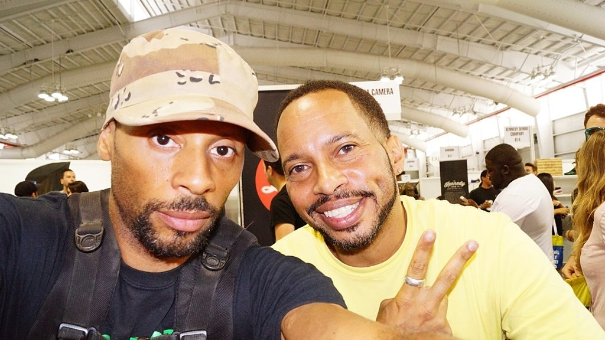

Mecca USA
In the summer of 1995 Tony moved to New York City to launch Mecca USA with Tony Shellman and Lando Felix. Mecca arrived just as American streetwear was turning from a scene into an industry — jeans, tees, jackets and logo knits that dressed a generation and became one of the reference points for the whole category.
That summer also carried a smaller, more particular story: candy-coloured suede New Balance imported from Europe, landing on a New York that had never seen them in those colourways. A footnote, and a lesson about what happens when you move product across a border before the market asks for it.